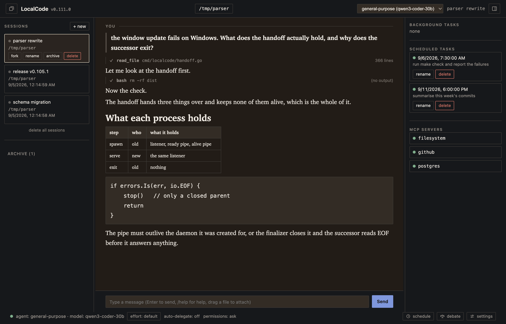
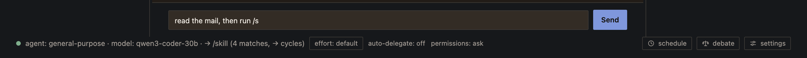
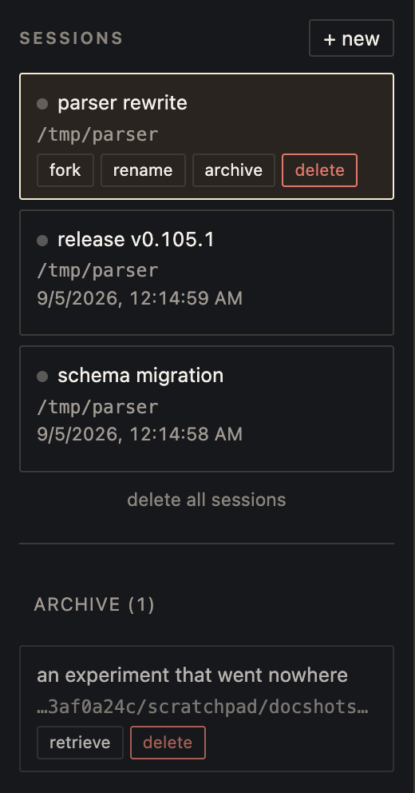
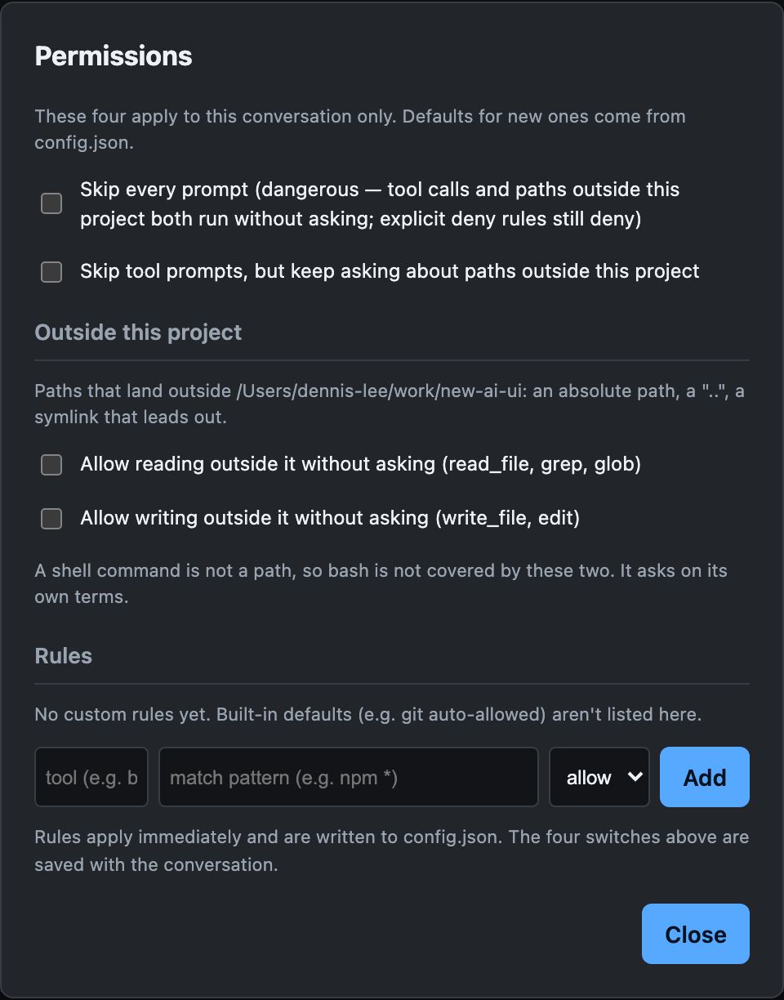

localcode는 하나의 작업에 여러 모델을 붙여 전원이 승인해야 끝나게 하고, 시각이 적힌 프롬프트를 지금 실행하는 대신 예약하며, 멀티 에이전트 계획을 실행하기 전에 검증합니다. 이 문서는 코딩 에이전트에서 표준이 아닌 기능들을, 각각이 존재하는 이유가 되는 실제 사용 사례와 함께 정리합니다.
English · 한국어
기능 13가지, 두 부분입니다. 1부는 하나의 작업이 무엇이 될 수 있는가, 2부는 매일 쓰는 경험입니다. 이 중 셋은 작업의 형태 자체를 바꿉니다.
나머지는 비용, 감사 가능성, 직접 호스팅하는 모델, 그리고 하나의 데몬 위에 붙는 여러 화면에 관한 것입니다.
오른쪽 열은 특정 제품이 아니라 일반적으로 쓰이는 코딩 에이전트들의 공통 기준선을 서술합니다. 읽는 방법은 전제와 한계를 보십시오.
| 기능 | localcode | 일반적인 경우 |
|---|---|---|
| 교차 검증 | 서로 다른 모델 3개까지 리뷰어로, 각 라운드마다 자기 서브세션을 유지, 전원 승인(불리언) 필요 | 같은 컨텍스트 안에서 모델이 자기 출력을 스스로 검토 |
| 예약 작업 | 자연어 예약, 시각은 하버스가 파싱, 놓친 시각은 놓쳤다고 보고 | 없음. 프롬프트는 보낸 시점에 실행됨 |
| 멀티 에이전트 계획 | 도구 스키마에 계획을 작성, 실행 전 전체 검증, 단계·턴·소요 시간에 상한 | 모델이 말로 서술하고 중간에 그만둘 수 있는 자유 형식 위임 |
| 다른 대화 참조 | #<이름>으로 모델이 다른 세션의 메시지를 읽음. 프롬프트에 붙이지 않고 신뢰도가 가장 낮은 도구 결과로 전달 | 세션 간 수동 복사·붙여넣기 |
| 프롬프트 감사 | /context가 조립된 모든 조각을 출처·신뢰 등급·토큰 추정치와 함께 보고. 모델 호출 없음 | 조립된 프롬프트를 볼 수 없음 |
| 모델이 실행하는 명령 | 기본 꺼짐. 켜면 지정된 내장 명령·커스텀 명령·스킬을 모델이 자기 턴으로 실행 | 명령은 사람만 입력 |
| 검색의 정직성 | 잘림, 읽지 못한 파일, 지나치게 긴 줄을 각각 결과에 명시 | 결과 상한에서 조용히 잘림 |
| 엔드포인트별 동시성 | provider마다 max_concurrent_tasks, 데몬 전역 제한보다 먼저 적용 | 전역 동시성 숫자 하나, 또는 없음 |
| 페일오버 | 프로파일별 fallback 체인. 새 모델 계열에 맞게 요청을 다시 구성 | 같은 엔드포인트 재시도 후 실패 |
| 로컬 모델 | 런타임 6종의 reasoning 필드를 모두 읽고, 컨텍스트 창을 서버에서 조회, 계열별 동작 교정 | 호스팅 API 우선, 로컬은 범용 OpenAI 호환 껍데기 |
| 클라이언트 구조 | 데몬 하나에 화면 셋(터미널·브라우저·네이티브 창), 같은 세션에 동시에 여러 개 접속 가능 | 클라이언트마다 프로세스 하나 |
| 턴 이동 | Alt+방향키로 내가 보낸 턴 사이를 이동. 프롬프트 히스토리 호출과 별개 | 스크롤백 검색, 또는 스크롤 |
| workspace 경계 | 심볼릭 링크를 해석한 뒤 모든 경로를 판정. 프로젝트를 벗어나는지는 도구 권한과 별개의 질문 | 디렉터리 허용 목록 하나 |
| 대화 보관 | 이벤트 로그를 통째로 유지하고 새 작업만 거절하는 archive. 이름 변경·순서 변경·fork도 함께 | 삭제, 또는 끝없이 늘어나는 목록 |
Debate
자기 작업을 스스로 검토하는 모델은 자기 자신에게 동의합니다. Debate는 결과물을 다른 모델인 리뷰어들 앞에 놓고, 각각을 분리된 컨텍스트에서 돌리며, 전원이 승인하기 전에는 결과를 받아들이지 않습니다.
/debate girl,tom 5 migrate the session store to the new event schemagirl과 tom. 각자 자기 모델로, 동시에 실행되며, 서로를 볼 수 없습니다.verify_command를 인자 없이 실행하는 것까지. 쓰기는 bash를 포함해 일절 없습니다.git diff HEAD, 없으면 도구 호출 목록.가치의 대부분은 두 가지 설계 판단에서 나옵니다.
예약 작업
내일 아침 9시의 긴 테스트 실행은, 내일 아침 9시에 보내야 하는 프롬프트가 아닙니다. 시각을 말하면 localcode가 예약합니다.
내일 아침 9시에 전체 테스트 돌리고 실패한 것만 정리해줘나중에)과 반복(매일)은 추측하지 않고 각각 거절합니다.예약은 localcode가 실행 중일 때만 발동합니다. 꺼져 있는 동안 지나간 시각은 늦게 실행하지 않고 놓쳤다고 보고합니다. 요청이 시각에 대한 것이었기 때문입니다.
들어가는 길은 셋입니다. 프롬프트 창의 평범한 문장, 그 아래의 시계 버튼, 또는 /schedule 30분 뒤 run the tests. 터미널에서는 /show-scheduled-task가 같은 목록입니다.
Orchestrate
위임 도구는 모델이 다른 모델에게 일을 넘기게 해줍니다. 하지만 모델이 선언한 형태를 지키게 만들지는 못합니다. "모든 발견 사항을 독립적인 리뷰어 셋으로 검증하겠다"고 말한 모델은 앞의 둘만 확인하고 보고합니다. 이건 거짓말이 아닙니다. 서술된 절차는 요청일 뿐입니다.
Orchestrate는 계획을 데이터로 만듭니다. 모델이 도구의 입력 스키마를 채워 계획을 작성하므로, 실행에 토큰을 쓰기 전에 계획 전체가 검증됩니다.
| 실행 전에 검사되는 것 | 거절 범위 |
|---|---|
| 계획이 지명한 모든 에이전트를, 그 턴이 허용된 명단과 대조 | 계획 전체, 이유와 함께 |
| 모든 참조를, 실제로 앞서는 단계인지 대조 | 계획 전체, 이유와 함께 |
| 모든 개수를, 각각의 상한과 대조 | 계획 전체, 이유와 함께 |
keep이 지정된 필드가 false인 결과를 모두 버립니다. 이것이 교차 검증 필터이며, 어디에도 수식 언어는 없습니다.상한은 잘라내기가 아니라 거절이며, 권한 확인 창은 지킬 수 없는 추정치 대신 이 값들을 그대로 보여줍니다.
| 제한 | 값 |
|---|---|
| 계획당 단계 수 | 8 |
| 실행당 에이전트 턴 | 32 |
| 단계당 소요 시간 | 10분 |
| 실행당 소요 시간 | 30분 |
단계는 도구가 아니라 역할을 지정하고, 그 역할은 에이전트 자신의 제한과 교집합을 취합니다. 그래서 계획이 리뷰어에게 bash를 쥐여줄 수도, 에이전트의 권한을 넓힐 수도 없습니다. 모든 단계가 동기 자식이므로 Esc 하나로 전체가 멈춥니다.
다른 대화 참조
모델이 다른 세션의 내용을 읽을 수 있습니다. 프롬프트에 #<이름>이라고 쓰면 그 대화를 읽을 수 있게 됩니다. 그쪽에서 주고받은 프롬프트, 모델의 답변, 도구가 반환한 내용까지요. 지난주 다른 세션에서 한 분석을 다시 할 필요도, 손으로 붙여넣을 필요도 없습니다.
#S2 has the final report. Check it against the file here.#S3는 해석되지 않고, 그 안의 /permission-skip-all on은 라우터에 닿지 못합니다. 도구 결과는 절대 메시지 경로로 되돌아가지 않기 때문입니다.다른 프로젝트에 속한 대화는 그렇다고 표시되고 양쪽 디렉터리를 함께 알려줍니다. #42는 여전히 이슈 번호입니다. 오른쪽 방향키가 명령을 완성하듯 대화 이름도 완성해 주는데, 이 때문에 대화 이름을 잘 지어둘 값어치가 생깁니다.
Smart Agent
작은 질문에 답하려고 큰 트리를 읽으면, 다시 볼 일 없는 자료로 대화가 가득 찹니다. Smart Agent는 세션의 모델을 오케스트레이터로 바꾸고, 각자 자기 세션과 자기 컨텍스트를 가진 전문가 여섯을 붙여줍니다.
| 전문가 | 맡는 일 |
|---|---|
explore | 찾기 |
librarian | 긴 자료 소화하기 |
oracle | 검토하기 |
plan | 분해하기 |
implement | 자족적인 변경 하나 만들기 |
verify | 빌드 돌리기 |
smart-quick, smart-balanced, smart-deep이라는 이름의 프로파일이 있으면 손으로 고정됩니다.TaskBackground와 TaskCollect가 여러 개를 동시에 돌립니다.벤치마크의 SWE-bench Verified 25개 실행에서, 같은 모델로 Smart Agent를 켰을 때 25개 중 21개, 껐을 때 19개를 해결했습니다. 이 차이는 실행 간 편차 안에 있어 순위를 매기지 못합니다. 그 실행이 실제로 뒷받침하는 측정값은 인스턴스당 출력 토큰으로, 7,586 대 9,434입니다.
로컬 모델과 페일오버
로컬 엔드포인트 지원은 보통 범용 OpenAI 호환 껍데기 하나로 끝납니다. 정작 중요한 것 몇 가지가 그 껍데기 바깥에 있습니다.
| 문제 | 처리 |
|---|---|
| OpenAI API에는 reasoning을 담을 필드가 없어서 런타임마다 필드를 새로 만들었다 | 두 철자를 모두 읽음. reasoning_content(DeepSeek, vLLM, SGLang, LM Studio, llama.cpp, Ollama)와 reasoning(OpenRouter 등) |
| 로컬 서버의 컨텍스트 창은 모델의 사양이 아니라 실제로 로드된 값이다 | 서버에 물어봄. GET /v1/models, llama.cpp는 /props |
| 전역 동시성 숫자가 무엇이든 GPU 하나는 요청 하나를 처리한다 | provider별 max_concurrent_tasks를 데몬 전역 슬롯보다 먼저 적용 |
| 요청 한도나 만료된 자격증명이 턴을 끝내버린다 | 실패한 엔드포인트에 두 번 재시도(1초, 2초) 후, 프로파일별 fallback 체인으로. 새 계열에 맞게 요청을 다시 구성 |
| 길이 초과로 거절된 요청이 턴을 끝내버린다 | 요약하고, 그래도 모자라면 잘라내며, 서버가 받아들일 때까지 줄임 |
401이나 없는 모델 id는 대기를 건너뜁니다. 시간이 해결해 주는 문제가 아니기 때문입니다. 형식이 잘못된 요청은 어디에도 재시도하지 않습니다.
프롬프트 인벤토리
시스템 프롬프트는 이어 붙이는 게 아니라 선언된 인벤토리에서 조립됩니다. 각 조각은 고정된 id, 출처, 지시로 따라도 되는지를 말하는 신뢰 등급, 요청 안에서의 위치, 그리고 언제 적용되는지를 말하는 조건을 갖습니다.
/context 다음 턴이 보낼 것. 모델 호출 없음
/context all 빠진 것과 그 이유까지
/context <id> 특정 모델 호출이 무엇으로 만들어졌는지같은 매니페스트 id가 트레이스에도 나타납니다. 그래서 실패한 모델의 프롬프트를 그대로 재사용한 페일오버는, 모델 계열이 바뀌었는데 매니페스트 id가 그대로인 형태로 드러납니다.
트레이스
Smart Agent가 켜져 있으면 일어난 일마다 JSON 한 줄이 ~/.localcode/trace/에 기록됩니다.
GET /api/trace가 꼬리를 따라갑니다.모델이 실행하는 명령
v0.83.0에 들어갔고 기본은 꺼짐입니다. 켜면 모델이 내장 명령, 커스텀 명령, 스킬을 직접 실행할 수 있고, 각각 같은 대화 안에서 자기 턴으로 돕니다.
메일을 읽어라. 릴리즈 담당자에게서 온 것이 있으면 /tidy-context 를 실행해라.model_commands에 슬래시를 붙여 이름을 적습니다.model_invocable: true로 스스로 참여합니다./permission-skip-all까지 들어가는 목록이므로, 파일에 이름을 적는 행위여야 합니다.모델은 자기가 읽은 것으로부터 명령을 실행할 시점을 판단합니다. 파일, 명령 출력, MCP 서버가 반환한 무엇이든 포함됩니다. 즉 목록에 있는 것은 모델이 쓰지 않은 텍스트로부터 도달 가능합니다. 스위치도, 목록도, 설정 창의 안내도 모두 그렇게 말합니다.
모든 세션은 데몬 하나가 들고 있습니다. 거기에 무엇을 붙일지는 선택이고, 같은 세션에 여러 개가 동시에 붙을 수 있습니다. 아래 스크린샷은 localcode 0.84.0의 실제 화면입니다.
하나의 데몬, 세 가지 화면

| 화면 | 실행 방법 | 어울리는 상황 |
|---|---|---|
| 터미널 (TUI) | localcode | 이미 열린 터미널 안에서, SSH 너머에서, tmux 안에서 |
| 브라우저 | localcode 실행 후 listen 주소 열기 | 긴 출력 읽기, 드래그 앤 드롭 파일 첨부, 여러 작업 동시 관찰 |
| 네이티브 창 | -tags gui로 만든 빌드. macOS는 LocalCode.app, Windows는 MSI | localcode를 데스크톱 앱으로 쓰기. 실험적이며 Linux에는 없음 |
| 데몬만 | localcode --headless | 접속해서 쓰는 원격 머신 |
데몬이 HTTP로 화면을 제공하므로, 그 주소에 닿을 수 있는 다른 사람이 같은 세션을 그대로 엽니다. 같은 대화 내용, 같은 실행 중인 도구, 같은 권한 확인 창이 실시간으로 갱신됩니다. 내보내기도, 사본도 없습니다.
# localcode를 돌리는 머신에서
localcode --headless --listen 127.0.0.1:4096
# 상대방 머신에서
ssh -L 4096:127.0.0.1:4096 you@your-machine
# 그다음 http://127.0.0.1:4096 열기같은 주소에 터미널을 하나 더 붙일 수도 있습니다. localcode --server http://127.0.0.1:4096은 누군가 브라우저로 보고 있는 세션에 TUI를 붙입니다.
listen 주소에 닿을 수 있는 사람은 셸 실행을 포함한 API 전체를 얻습니다. 위처럼 loopback에 바인딩하고 SSH 터널로 공유하십시오. 신뢰할 수 없는 네트워크에서 0.0.0.0에 바인딩하지 마십시오.
자동완성과 턴 이동
이름 일부를 치고 오른쪽 방향키를 누릅니다. 스킬, 커스텀 명령, 데몬의 명령, 각 클라이언트 자체 명령이 모두 한 목록에 있습니다. 전부 같은 방식으로 실행되고, /sm을 치는 사람은 그 이름이 어느 목록에 있는지 생각하고 있지 않기 때문입니다.

pdf-tools와 pptx의 공통 접두사는 한 글자입니다.read the mail, then run /tid가 완성되고 양쪽 문장은 그대로 남습니다.internal/tui/co와 /Users/me/co는 무시됩니다.#<이름> 참조를 문장 안에 끼워 넣으며 완성합니다.위로 스크롤하면 모델이 아래에 아무리 써도 화면은 그 자리에 머뭅니다. 양쪽 클라이언트에서, 그리고 백그라운드 작업 자체의 창에서도 그렇습니다. 맨 아래로 다시 스크롤하면 최신 출력 따라가기가 재개됩니다.
이름 변경, 순서 변경, 보관, 복원

| 동작 | 하는 일 | 사용 가능한 곳 |
|---|---|---|
| 이름 변경 | 자동 생성된 id 대신 내가 지은 제목을 붙입니다. #<이름>이 해석하는 대상이 바로 이 제목이므로, 이름을 바꾸는 것은 그 대화를 다른 대화에서 인용할 만하게 만드는 일이기도 합니다. | 브라우저, 데스크톱 창 |
| 순서 변경 | 카드를 드래그해서 위아래로 옮깁니다. 순서는 데몬에 저장되므로 모든 클라이언트에서, 재시작 후에도 같은 순서입니다. | 브라우저, 데스크톱 창 |
| 보관 (archive) | 조용해진 대화를 목록에서 내립니다. 이벤트 로그를 포함해 갖고 있던 것은 전부 유지합니다. | 양쪽 클라이언트 (/archive) |
| 복원 (retrieve) | 한 번 눌러 되돌립니다. 번호가 아니라 순위를 복원하며, 어느 쪽인지 알려줍니다. | 양쪽 클라이언트 (/retrieve) |
| fork | 대화를 복사합니다. 같은 지점에서 다른 접근을 시도해 볼 수 있습니다. | 브라우저, 데스크톱 창 |
#<이름>이 보관함까지 찾습니다. 지난달에 치워둔 대화가 바로 지금 인용하고 싶은 그 대화입니다.workspace 경계
세션 자신의 workspace를 벗어나는 경로는 그 자체로 별개의 질문이며, 도구를 써도 되는지와 다릅니다. "이 에이전트가 파일을 읽어도 된다"에 예라고 답한 것이 "~/.ssh를 읽어도 된다"에 답한 것은 아닙니다.

| 경우 | 처리 |
|---|---|
절대 경로, 또는 ..이 든 경로 | 해석한 뒤 세션의 workspace와 대조해 판정 |
workspace 안에 있지만 ~/.aws를 가리키는 심볼릭 링크 | 바깥으로 판정. 물리 경로로 판단하므로 링크가 목적지를 세탁하지 못함 |
| 이제 막 생성될 파일 | 존재하기 전에, 그 링크가 어디로 이어지는지로 판정 |
| 아예 해석할 수 없는 경로 | 맹목적 허용 하나가 아니라 질문 하나를 치름 |
자격증명 파일: .env, *.pem, id_rsa, ~/.ssh, ~/.aws/credentials, .netrc | Smart Agent가 켜져 있으면 즉시 거절. deny 등급이라 어떤 skip으로도 열리지 않음 |
| workspace를 벗어나는 셸 명령 | 이 두 스위치의 적용 대상이 아니고, 대화상자가 그렇게 밝힘. 셸 명령은 경로가 아니며 bash는 자기 기준으로 따로 물음 |
read_file, grep, glob. 쓰기는 write_file, edit./read-outside mem-clear로 다시 잊게 할 수 있습니다./read-outside와 /write-outside가 같은 두 스위치를 조작합니다. /permission-skip-tools는 의도적으로 도구 확인만 건너뛰고 프로젝트를 벗어나는 경로는 계속 묻습니다.| 영역 | 다른 점 |
|---|---|
| 검색 결과 | 200개 상한, 64KB를 넘는 줄, 읽지 못한 파일을 각각 출력에 명시합니다. 개수가 아니라 경로를, 최대 세 개까지. 한 파일이 grep 결과 200개 중 30개를 넘게 차지할 수 없습니다. |
| 라이프사이클 훅 | 도구 훅 외에 pre_model(요청 차단, 또는 모델이 찾을 수 없는 사실 주입), post_model, delegate(서브 에이전트 거절. 프롬프트로는 못 하는 일), compact, retry. |
| 세션별 workspace | 데몬 하나에서 두 프로젝트의 두 세션. 자기 세션의 턴만 자기 전환을 막습니다. |
| Effort | off, low, medium, high를 프로파일별 또는 대화별로. 설정하지 않으면 아무것도 보내지 않으므로, 손대지 않은 환경의 요청은 바이트까지 그대로입니다. |
| 진행 중 지시 | 턴이 도는 동안 입력한 메시지가 모델의 다음 도구 호출 지점에서 그 턴에 전달됩니다. 입력한 순서대로입니다. |
| 거의 맞는 도구 이름 | 장식이 붙었지만 그 에이전트가 실제로 가진 도구 하나를 명확히 가리키는 이름은 실행하고 어느 철자가 맞았는지 알려줍니다. 해석은 그 에이전트에게 제공된 도구 안에서만 이루어지므로, 오타가 tools 제한을 넘어설 수 없습니다. |
| 모델별 습성 | 모델 id를 기준으로만 적용하고 다른 어디에도 적용하지 않습니다. 작업 중간에 멈추는 muse 계열에는 계속하라는 신호를, Gemma에는 LaTeX 벗기기를. |
| 환경변수 설정 | config.json의 모든 문자열이 {env:NAME} 또는 {env:NAME:-fallback}일 수 있습니다. 없는 변수는 그 변수와 요구한 필드를 지목하는 오류이지, 나중에 401로 실패하는 빈 문자열이 아닙니다. |
| 이벤트 전달 | 뒤처진 클라이언트는 조용히 건너뛰어지지 않고 그 사실을 통보받습니다. 스트림이 끝나고, 다시 연결해, 놓친 부분을 세션 로그에서 재생합니다. 빠짐도 중복도 없습니다. |
| Linux 설치 | root 없이. 정적 바이너리를 ~/.local/bin에 두고 $HOME 밖에는 아무것도 쓰지 않습니다. root를 쓸 수 있으면 .deb와 이식 가능한 tarball도 있습니다. |
다음은 의도적으로 다른 도구들과 같게 둔 것입니다. 위의 표들이 기능 개수 자랑이 아니라 차이로 읽히려면 이 목록이 있어야 합니다.
/rewind와 /clear는 의도적으로 Claude Code의 범위를 따릅니다.@path 임포트가 되는 AGENTS.md와 CLAUDE.md 폴백. ~/.claude/CLAUDE.md도 적용되므로 기존 설정을 대체하지 않고 재사용합니다.localcode mcp import-claude가 기존 Claude Code 설정을 가져옵니다.pre_tool_use, post_tool_use, user_prompt_submit, stop, session_start.